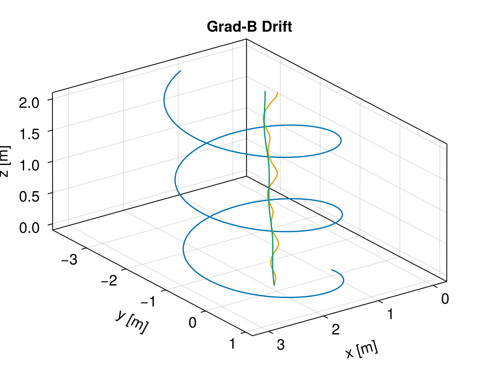

Grad-B drift


This example demonstrates a single proton motion under a non-uniform B field with gradient ∇B ⊥ B. The orbit of guiding center includes some high order terms, it is different from the formula of magnetic field gradient drift of some textbooks which just preserves the first order term. It is more complex than the simpler ExB drift. More theoretical details can be found in Grad-B Drift, and Fundamentals of Plasma Physics by Paul Bellan.
using TestParticle, OrdinaryDiffEqVerner, StaticArrays
using LinearAlgebra: ×, ⋅, normalize, norm
using ForwardDiff: gradient
using CairoMakie
grad_B(x) = SA[0, 0, 1e-8 + 1e-9 * x[2]]
uniform_E(x) = SA[1e-9, 0, 0]
abs_B(x) = norm(grad_B(x))
# Trace the orbit of the guiding center using analytical drifts
function trace_gc!(dx, x, p, t)
q2m, _, E, B, _, sol = p
xu = sol(t)
gradient_B = gradient(abs_B, x)
Bv = B(x)
b = normalize(Bv)
v_par = (xu[4:6] ⋅ b) .* b
v_perp = xu[4:6] - v_par
dx[1:3] = norm(v_perp)^2*(Bv × gradient_B)/(2*q2m*norm(Bv)^3) +
(E(x) × Bv) / norm(Bv)^2 + v_par
end
# Initial condition
stateinit = let x0 = [1.0, 0, 0], v0 = [0.0, 1.0, 0.1]
[x0..., v0...]
end
# Time span
tspan = (0, 20)
param = prepare(uniform_E, grad_B, species = Proton)
prob = ODEProblem(trace!, stateinit, tspan, param)
sol = solve(prob, Vern9())
# Functions for obtaining the guiding center from actual trajectory
gc = param |> get_gc_func
gc_x0 = gc(stateinit) |> Vector
prob_gc = ODEProblem(trace_gc!, gc_x0, tspan, (param..., sol))
sol_gc = solve(prob_gc, Vern7(); save_idxs = [1, 2, 3])
# Numeric and analytic results
f = Figure(fontsize = 18)
ax = Axis3(f[1, 1],
title = "Grad-B Drift",
xlabel = "x [m]",
ylabel = "y [m]",
zlabel = "z [m]",
aspect = :data,
azimuth = 0.3π
)
gc_plot(x, y, z, vx, vy, vz) = (gc(SA[x, y, z, vx, vy, vz])...,)
lines!(ax, sol, idxs = (1, 2, 3), color = Makie.wong_colors()[1])
lines!(ax, sol, idxs = (gc_plot, 1, 2, 3, 4, 5, 6), color = Makie.wong_colors()[2])
lines!(ax, sol_gc, idxs = (1, 2, 3), color = Makie.wong_colors()[3])

Note that in this grad-B drift case, the analytic and numeric guiding centers have different trajectories.
This page was generated using DemoCards.jl and Literate.jl.